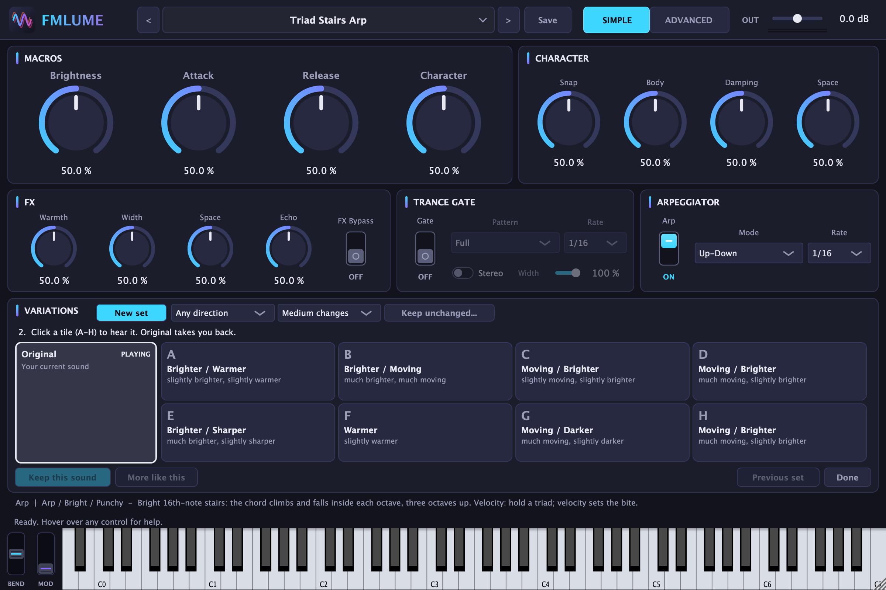
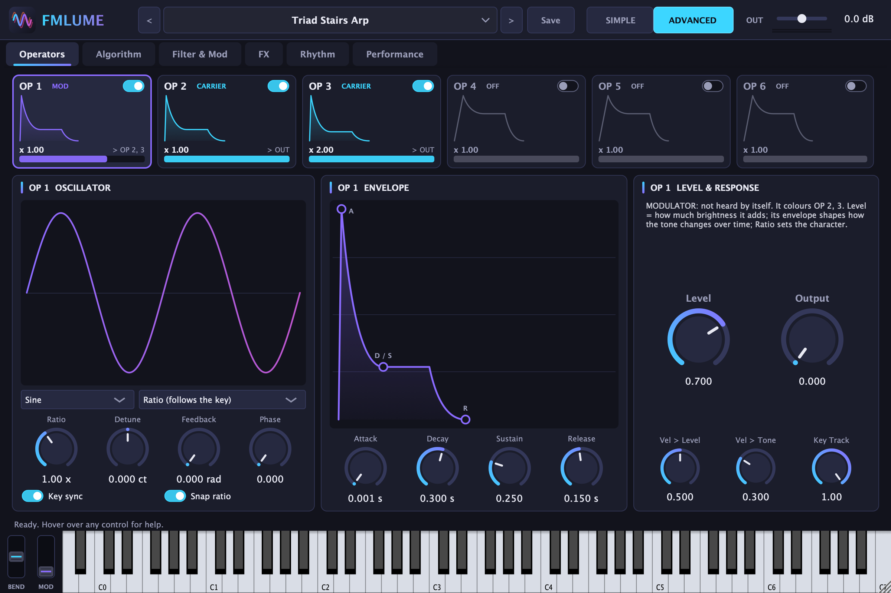
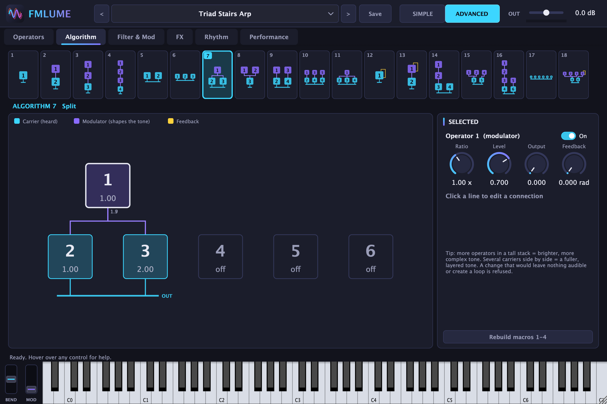
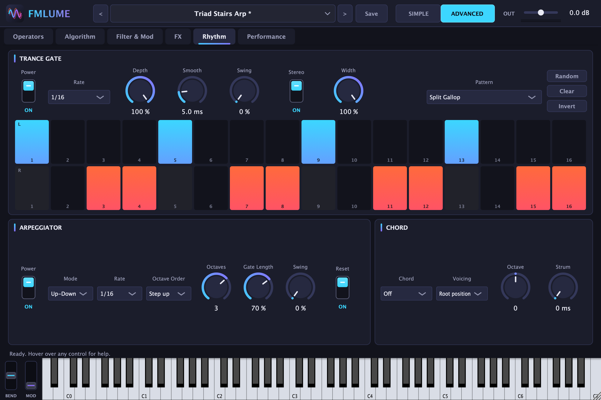
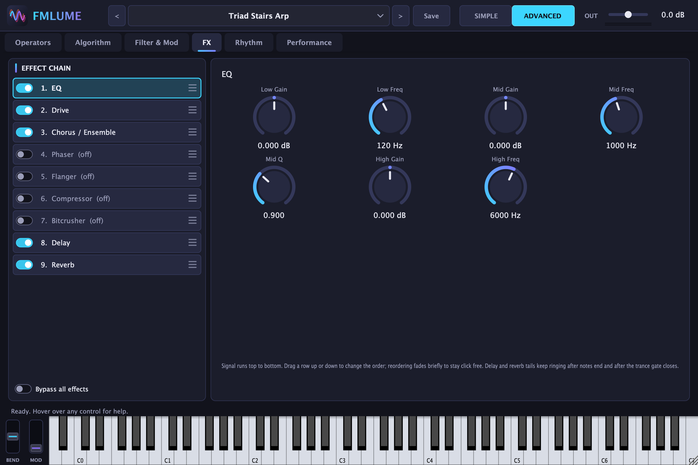
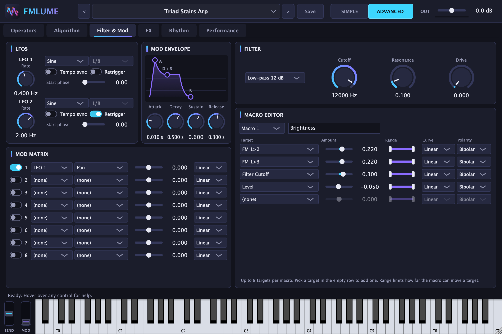
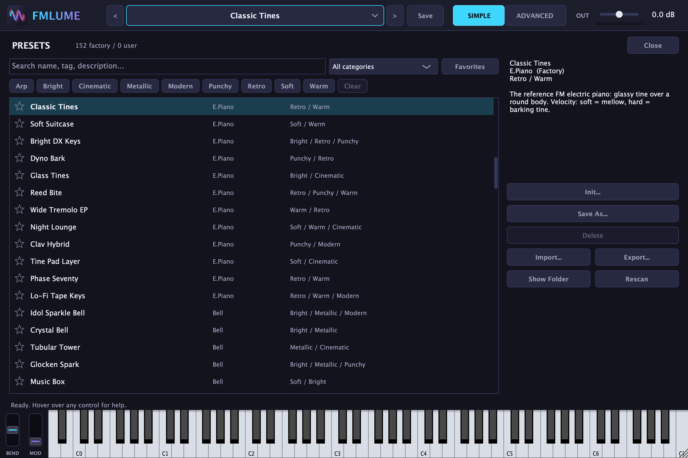

FMLUME
選んで、回して、聴き比べる。
FM の音作りを、もっと気軽に。
きらめくベル、エレピ、芯のあるベース、厚みのあるポリシンセ、階段を駆け上がるようなアルペジオ。FM の仕組みを知らなくても、音色を選んでノブを回し、候補を聴き比べていくうちに、欲しい音にたどり着けます。もっと作り込みたくなったら、オペレーターを 1 つずつ触ることもできます。
特長
FM シンセは「どこを触ればいいのか分からない」と言われがちです。FMLUME なら、音色を選ぶ、ノブで寄せる、候補を聴き比べる、という 3 つの手順で音が作れます。その奥には、6 つのオペレーターを自由につなげられる本格的な FM 音源が入っています。
8 つのノブで音を作る
どの音色にも、明るさ・立ち上がり・余韻・質感の 4 つと、その音色に合わせた 4 つ、合わせて 8 つのマクロが用意されています。ノブが真ん中のときが元の音で、左右に回して曲に合わせていきます。オペレーターやアルゴリズムの知識は要りません。
Variations — 8 つの候補から選ぶ
Generate を押すと、いまの音をもとにした候補が 8 つ並びます。タイルをクリックして聴き比べ、気に入ったものを Keep で採用します。「もっと明るく」「もっと柔らかく」といった方向や、変化の大きさも選べます。処理はすべてお使いの Mac の中で完結します。
階段のように動くアルペジエーター
上昇・下降・往復・ランダム・弾いた順に加えて、和音の形を保ったままオクターブ単位で上り下りする「Octave Order」を備えています。Chord と組み合わせれば、鍵盤を 1 つ押すだけで和音のアルペジオが鳴ります。
左右で刻む Trance Gate
16 ステップのゲートは、左右のチャンネルで別々のパターンにできます。パターンは 52 種類。DAW のテンポに同期し、アルペジエーターと同時に使えます。
6 つのオペレーターを自由につなぐ
18 種類のアルゴリズムから選ぶことも、図の上でオペレーターをドラッグして自分でつなぐこともできます。実際に聞こえる音（キャリア）と、音色を変える役（モジュレーター）は色で見分けられ、いま使っているアルゴリズムの番号も表示されます。
目で見て触れる Operators
6 つのオペレーターはカードで一覧でき、選んだ 1 つだけを詳しく編集します。波形とエンベロープはグラフで表示され、エンベロープは点をドラッグして形を変えられます。
エフェクトは 9 種類、順番も自由
EQ、Drive、Chorus、Phaser、Flanger、Compressor、Bitcrusher、Delay、Reverb。ドラッグで好きな順番に並べ替えられます。Simple 画面では、Warmth・Width・Space・Echo の 4 つのノブでまとめて調整できます。
音に動きをつける
LFO が 2 基、モジュレーション用のエンベロープ、8 スロットのモジュレーションマトリクス、そしてフィルター（LP / HP / BP）。FM のかかり具合、ピッチ、パン、エフェクトの量まで揺らせます。
32 音ポリ、ユニゾンは最大 8
モノ、レガート、グライドにも対応しています。音質は 1 倍・2 倍・4 倍のオーバーサンプリングから選べます。処理で生じる遅れは DAW に正しく伝えるので、ほかのトラックとずれません。
DAW で安心して使える
音が鳴っている最中に、音切れの原因になるような重い処理は行いません。音色の設定はプロジェクトにまるごと保存されるので、開き直せば同じ音がそのまま戻ってきます。
プリセットは 1 音色 1 ファイル
音色は 1 つずつファイルになっていて、書き出しも読み込みも自由です。壊れたファイルや不正なファイルは、読み込むときに検査してはじきます。
音作りの流れ
ここまでは Simple 画面だけでできます。
- 選ぶプリセット名をクリックするとブラウザーが開きます。カテゴリやタグで絞り込んで、音色を選びます。
- 回す8 つのマクロと Warmth・Width・Space・Echo で、曲に合うように整えます。
- 聴き比べるVariations で候補を 8 つ作り、タイルをクリックして試聴します。気に入れば Keep、惜しければ More like this でさらに候補を出します。
- 刻むArpeggiator と Trance Gate を ON にして、パターンを選びます。
音の流れ
鍵盤を弾いてから音が出るまでの流れです。上の段から下の段へ、段の中では左から右へ進みます。
152 のプリセット
いちばんの売りはアルペジオです。読み込むだけでアルペジエーターが動き出す音色を 30 用意しました。どの音色も、8 つのマクロがきちんと効くこと、音量がそろっていることを 1 つずつ測って確かめています。カテゴリごとの数は次のとおりです。
デモは FMLUME の出力をそのまま録音したもので、ほかのエフェクトは一切かけていません。アルペジオのデモは、和音（または鍵盤 1 つ）を押さえているだけです。
画面
ふだん使う Simple、音を作り込む Advanced、音色を探すプリセットブラウザーの 3 つです。







動作環境
- OS
- macOS 12 以降
- CPU
- Apple Silicon（Intel 版も同梱していますが、Intel の実機では動作を確認していません）
- 形式
- Audio Unit（.component）、VST3（.vst3）、Standalone アプリ
- 種類
- 音源（MIDI 入力、ステレオ出力）
- 同時発音数
- 最大 32 音、ユニゾン最大 8
- 状況
- 現在開発中です。配布はまだ行っていません。
- ライセンス
- GNU AGPL v3.0（自由ソフトウェア）
- 対応しないもの
- Windows、AAX、CLAP、AUv3、MPE